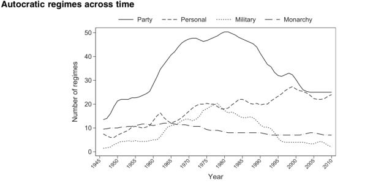
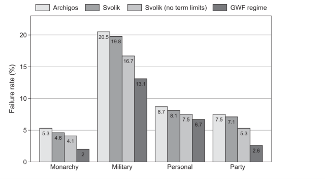

政体变迁的研究利器：GWF数据库
收录于合集
#民主与民主化 34 个
#比较政治学 121 个
#国家建构与国家发展 70 个
文献来源： Geddes, B., Wright, J., & Frantz, E. (2014). Autocratic breakdown and regime transitions: A new data set. Perspectives on Politics , 12(2), 313-331.
威权领导人下台后可能会出现三种结果，一是政权在新的领导人统治下延续，二是民主化，三是出现新的威权政体。之前的研究过于关注民主化这一种情形，实际上在二战之后的75年里，只有威权国家中发生的领导人更替只有45%促成了政权变迁，其中有超过一半的政权变迁是由一个威权政体转向另一个威权政体。
由Geddes, Wright和Frantz(GWF)所构建的数据库有助于回答，在什么情况下一个独裁者的倒台会促成民主化，在什么情况下只是促成了另一个威权政体的出现。该数据库旨在促进学术界对威权政体变迁分析的理论化。
测量威权政体
政体就是决定领导阶层产生和谁能影响决策的正式和非正式的制度，因为很多国家在形式上属于自由民主制度，但其实际制度运转却与此大相径庭。领导阶层的身份，他们所代表的利益是分析政体类型的关键。Bueno de Mesquita(BDM)用推举人团（Selectorate）指那些能够影响领导人人选的群体，而作者的领导阶层则接近他所说的致胜联盟（Winning Coalition）。BDM通过推举人团和致胜联盟的相对规模来解释所有类型的政体，不论是民主政体还是威权政体。但作者认为关键在于领导阶层所代表的利益而不是规模。一场导致领导人更迭的政变不一定会发生政权变迁。如果新的领导人代表不同的族群利益，那么则发生了政权变迁。如果新的领导人只不过是来自旧领导人的小圈子，那么这政变可能只是带来了领导人的变化。尽管这两种情况下，可能正式制度和致胜联盟与推举人团的相对规模并没有发生变化。
数据库里包含有1946年-2010年所有在2009年时人口超过一百万的280个威权政体。与Cherbub, Gandhi, Vreeland(CGV)的数据库不同，威权政体不再只是民主政体之外的剩余。作者的数据库将非民主政体划分为政党统治、军政权、个人统治、君主制、少数统治、间接军政权和前三种类型的混合政体。通过判断决策、领导人选择和暴力机构掌握在执政党手里（政党统治）、皇室手里（君主制）、军队手中（军政权）还是以某个人为核心的小圈子手里（个人主义独裁）来做出政权类型的划分。这三类政权及其混合是一般意义上的威权政体。少数统治制度是那些领导人是通过竞争性选举产生，但是大多人都没有选举权（白人统治时期的南非）。间接的军政权指的是领导人通过竞争性选举产生，但是军队禁止一些能够吸引大量选票的政党参选（民盟被禁止参与选举时期的缅甸）。下图展示了冷战后不同类型的威权政体数量的变化。

其中比较有意思的是，在第三波民主化浪潮之后，威权政体的数量总体上是呈下降趋势的，但个人统治型的政权却呈现出上升的趋势，其在威权政体中的占比已经接近政党统治的政权。尽管在政体评分中，君主制的民主得分在威权政体类型中也是最差的，但是君主制政体的数量一直比较稳定。
GWF数据库与CGV数据库还有一个主要差别在于对于政权的编码。GWF数据库区分了那些作为一个机构来进行的统治的军队和那些依靠军队来统治的强人政权。前者被标记为军政府，后者则被认为是个人统治。在GWF数据库中，只有那些统治者联合其他高级军官进行统治的政权才被称为是军政权。在CGV数据库中，只要领导人有军衔就被政权视为军政府。乌干达的阿明政权在CGV中被标记为军政权，GWF数据库则认为这是个人统治。因为阿明在决策过程中实际上把除他以为的高级军官边缘化了。
如何测量政体存续（regime survival）？
在这一数据库中，作者将领导人执政时间（leader tenure）、威权统治时间(autocratic spells)和政权存续时间（regime duration）区分开来。领导人执政时间是指同一个领导人（dictator）在一个国家的连续执政时间。威权统治时间指的是威权统治方式在一个国家连续存在的时间。政权存续则指的是同一个政权在一个国家连续存在的时间。这是对威权政体存续的三种主要的理解。那么用哪种方式来测量政体存续是更恰当的呢？
根据Milan Svolik的领导人数据库Archigos数据库的比照（这两个数据库记录了领导人更迭的信息）。结果如下图所示。作者发现，在所有类型的威权政体中，政权失败的概率都低于领导人更迭。根据与Archigos数据库的比照，威权政体领导人执政时间平均为7年，大概是政权维系时间的一半。这就意味着，威权政体和民主政体一样能实现领导人的变动。使用领导人的更迭来表示政体更迭往往会低估威权政体的韧性，尤其在政党统治的威权政治中。

但最容易混淆的还是政权存续时间和威权统治的存续时间。对威权统治的存续时间的测量，通过当前统治方式是否有民主化来打断为标准。很多学者用威权统治持续的时间来表示政权存续。但是这就会漏过很多转向威权的政权变迁。例如，在乌干达，阿明通过政变推翻了奥伯特政权，实现了政权变迁，从政党统治转向了个人统治。但是从政体指数来看，乌干达的民主水平并没有发生变化。如果使用威权统治时间来表示政权存续将会把这种第三世界大量存在的从威权到威权（autocracy to autocracy transition）的转型过滤掉。Adam Przeworski在《民主与发展》（Democracy and Development）这本书中，探讨了经济危机对民主与专制政体的影响。并得出了经济危机对于威权政体没有解构作用的结论。但他利用威权统治方式的延续来表示威权政体的存续，这只能说明经济危机并不会增加民主化的可能性。在CGV数据库中，威权统治持续时间的中位数是28年，在GWF数据库中，威权政体存续时间的中位数为14年。用威权统治时间来测量政体存续将导致对威权政体稳定的高估。
一个更细致的数据库
GWF数据库的一大优势是他记录了政权开始和终结的时间，在其他数据库中，我们需要通过政权转变为民主体制的年份来计算政权的存续时间。但这样就容易忽视那些从威权转向威权的案例。GWF数据库还记录了导致政权变迁的主要政治事件，包括选举失败、社会抗争、军事政变、自我革命等。除了对事件的记录，数据库里还包括对政权变迁的暴力程度的测量。在政权变迁过程中没有人死亡赋值为0，导致1-25人的死亡的赋值为2，出现25-1000人死亡的赋值为3，出现1000人以上死亡数的赋值为4。
当然，再好的数据库如果我们不去使用它，那么他的优势也就毫无意义。作为比较政治研究中的一个关键变量，对于政体类型的准确测量将有助于我们更加理论化地分析政体变迁。此外，政体类型在反腐败、经济发展、内战等议题上仍然是值得纳入分析的重要变量。
数据库链接：http://sites.psu.edu/dictators/

广告点一点，也是支持学术公益
政观编辑部
感谢你支持学术公益
微信扫一扫赞赏作者 __赞赏
已喜欢，对作者说句悄悄话
取消 __
发送给作者
发送
最多40字，当前共字
上一页 1/3 下一页
长按二维码向我转账
感谢你支持学术公益
受苹果公司新规定影响，微信 iOS 版的赞赏功能被关闭，可通过二维码转账支持公众号。